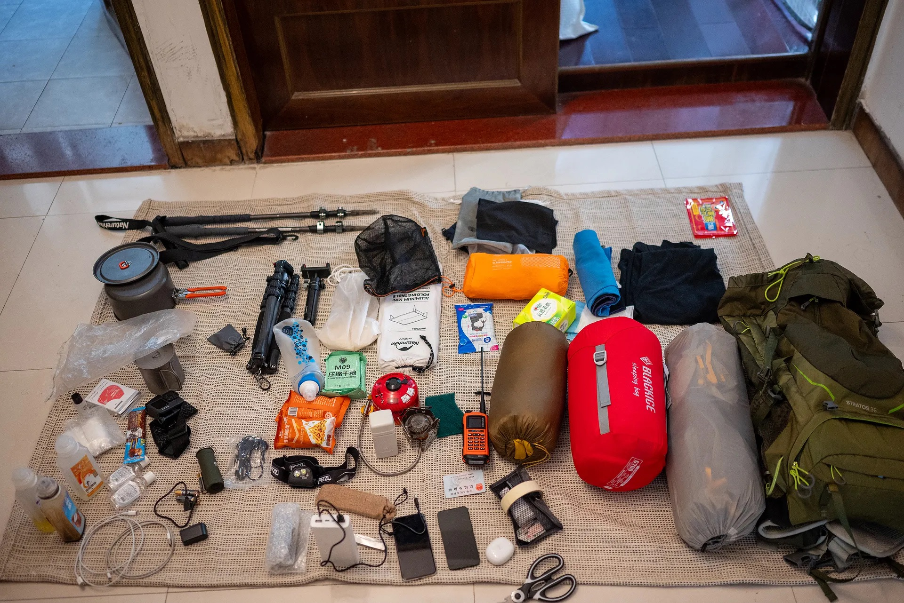
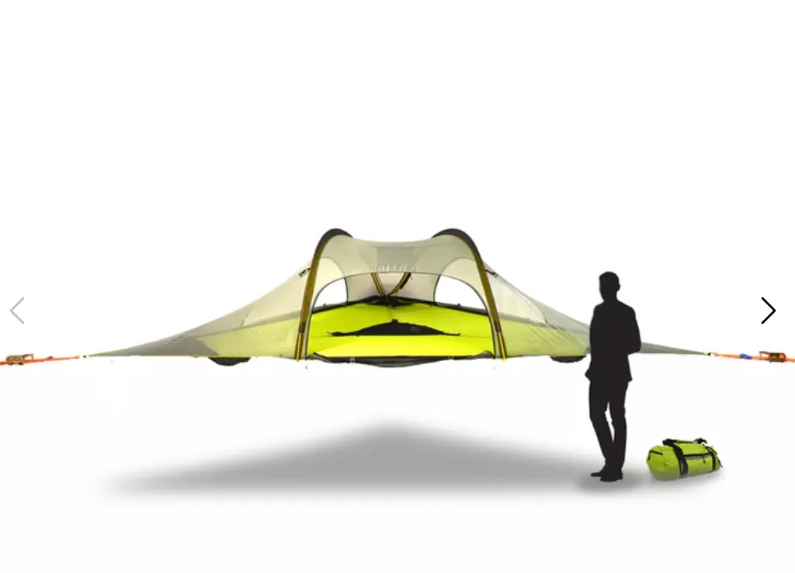
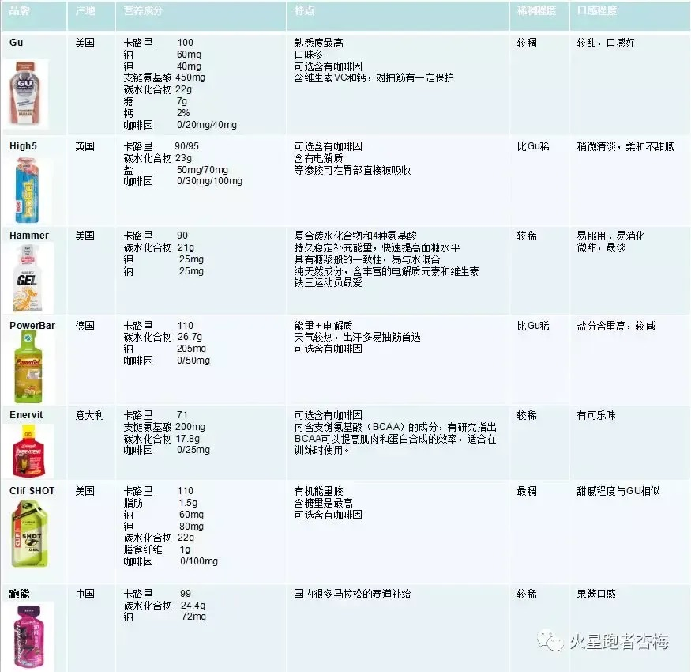

户外资料备查清单

📑 目录
品牌查备清单
前言
*品牌的注册地是国内还是国外，以及在大陆是否自有工厂，在很在大程度上影响其产品的定价是否亲民，也决定了它所能提供的售后服务是否更及时，更方便和专业，所以我认为这是非常具有参考价值和意义的信息。在本文中，我尽我所知地整理了他们的注册地和工厂信息。*没有出现的品牌不代表其没有，更可能是官方未公布此类消息，或是我还不知道。这些信息最后更新与[20240921]
*产品使用体验和评价具有时效性，且难免受限于我的主观，因此我非常有可能描述得不完整或者缺乏代表性。我相信每个品牌都是某个领域的佼佼者，并且都在不断进步。
*请理解一个人整理资料维护本页面是一件非常需要时间的事情，而一个人又往往总是没有足够用的闲余时间。因此虽然我非常想把这个页面做得很棒很深入详细，但..正如我前面所讲。所以还请您在阅读时理解我的用词为何淡薄，我的表达为何显得偏激和锐化，请您理解我拙劣文字之间所表达的含义，而非陷入名词陷阱，严苛文字。
*请遵循本站的传播规则————不要在您不能控制的场合提及本站。
背负&睡眠领域品牌（@2024年9月21日 ：
zpacks - 国外品牌，产品包括洗漱包、打包袋、帐篷、背包，主打极致轻量化
MORAKNI/莫拉 - 国外品牌，主要生产瑞士丛林生存刀（猎刀），国内购买需付较高关税
手艺宅 - 国内厂家，产品主要是帐篷
山趣（Shine Trip） - 国内品牌，产品主要是帐篷
EE（Enlightened Equipment） - 美国品牌，主要提供定制化睡袋纯手工制作服务，可自定义设计，有自己的工厂，受众多户外YouTuber推荐，价格相对合理但需排队数月，中国大陆无代理
轻途 - 国内品牌，为挪客代工，产品质量与挪客相当，价格更便宜
并州牧 - 国内品牌，防潮垫在户外圈知名度高，但品牌资料较少
翼马 - 国内品牌，睡袋价格亲民，工厂情况不明
高山客 - 国内品牌，产品涵盖帐篷、服饰到通讯设备，国内有工厂
ULA - 美国品牌，产品主要是轻量化背包，美国本地品牌，国内无购买渠道
bonfus - 美国品牌，从工作室发展为轻量化第一梯队，产品包括轻量化背包、登山杖和帐篷，58L背包仅700g，非自立双人帐篷600g（价格700美元）
HMG（Hyperlite Mountain Gear） - 美国品牌，产品主要是轻量化背包，价格比bonfus稍便宜但仍较高，粗苯工艺和设计各有特点
TMR W.R.Cooker - 日本品牌，产品包括帐篷、背包、户外炊具，价格昂贵，国内无渠道
自由之魂 - 国内品牌，产品主要是帐篷，价格较同类竞品偏高，国内无工厂
三峰出 - 国内知名品牌，产品主要是帐篷、背包，借鉴国外T1梯队设计，材料亲民，价格实惠
knot（远行） - 国内品牌，无自有工厂，原主要生产小件产品，近期转向轻量化路线
迪卡侬 - 国际品牌，其2-4人露营不粘锅套锅表现优秀
UI（FORCLAZ） - 迪卡侬子品牌，logo字样为UI
格里高利 - 国外知名品牌，经典产品B75曾是负重背包代表，自重2.2kg，近年向轻量化方向发展
OSPREY - 国外知名背包大厂，工厂在越南，"空速背负"系统适合夏季易出汗情况使用
BA - 国外品牌，主打轻量化，产品主要是帐篷，自立帐轻巧但价格昂贵
Deuter多特 - 主要产品为背包，品牌了解度较低
MYSTERY RANCH - 神秘农场，知名背包品牌，风格偏向BC和军事风，设计较为特殊
aricxi - 国内品牌，产品主要是庇护系统（天幕、帐篷、睡垫），天幕和地布表现一般
kovea - 韩国品牌，主营精致露营产品（炉头、酒精炉、杯子等），价格昂贵，有为其他品牌代工的工厂
ASTAGEAR（静星） - 国内轻量化品牌，产品主要是帐篷、天幕，少数使用粗苯材料的国内品牌，山居1无杆单人帐粗苯材质仅560g，价格3800元
炊具系统：
德力西 - 中国500强企业，主营金属制品，例如刀具、螺丝刀。
GSI OUTDOOR - 产品主要是炊具，设计和口碑不错，但实际是伪装成国外品牌的国内工厂，在中国生产并转内销。
小乐工房 - 产品主要是酒精炉、柴火炉、炉头、锅碗瓢盆，是在闲鱼上售卖自制产品的手工店铺，口碑良好。
iWalker爱玩客 - 产品主要是酒精炉、柴火炉，但新产品营销噱头多，实用性变差。据说是找代工厂生产。
goshawk - 产品主要是炉子、柴火炉、酒精炉，品牌和工厂都在澳洲，偏向BC风。
鸿丰、必唯 - 国内两个专门做纯钛和钛合金制品的厂家。
雪峰Snow Peak - 日本知名品牌，定位城市露营，日本和中国都有工厂。
步林 - 国内品牌，产品多有设计，但偏向城市露营，主打价格优势。
OPINEL - 号称法国品牌，无中国渠道和工厂，产品全是刀具，旗下有铪刃产品。
山之厨 - 国内品牌，产品主要是冻干食品、压缩食品。
Ever new - 国外品牌，炊具系统基本上都有涉及，产品设计比较创新。
MSR - 国外知名品牌，产品主要是炊具、小件装备和极端环境下的产品，是户外领域非常出名和可靠的品牌。
Trangia - 国外知名品牌，产品主要是酒精炉，还有折叠柴火炉、卡片柴火炉、焚火台等。酒精炉的设计和燃烧表现个人评价一般。
seatosummit - 国外知名品牌，价格相对较高。
火枫 - 国内品牌，盛宴系列锅具口碑不错，耐用。
爱路客 - 国内品牌，营销噱头较多，设计不实用。
岩谷 - 国内品牌，产品主要是炉子，基础款价格低廉（70CNY）。
soto - 户外装备知名品牌、炉具较出名。
old papa - 刀具品牌，可能不算纯户外领域，但小刀实惠便宜。
bushbox - 主营折叠柴火炉/卡片柴火炉、焚火台。
firebox - 主营折叠柴火炉/卡片柴火炉、焚火台。
FlameCube/纯焰 - 国产品牌，主营折叠柴火炉/卡片柴火炉，有一些有趣的设计。
山趣 - 只买过折叠手锯。
戈博、鸿丰、福冈、顺全、莱泽曼、三刃木、鹰朗、洛森rorox - 这些品牌主营EDC、多功能刀、斧头等道具。
邓家刀 - 主要售卖刀具，特点是价格有竞争力。
脉鲜 -韩国品牌，最知名的G2、G5系列扁液化气罐专为高海拔环境设计。G5实际容量（230-245g）多于G2（110g）。G5更适合单人5天以上旅途（搭配soto310最大火力约4小时），G2适合3天以下旅途（约2小时）。
保暖服饰：
黑冰BLACK ICE - 近几年知名度非常高的羽绒制品牌，名气有赶超mont-bell的趋势，睡袋口碑非常好，但价格逐年上涨，自有工厂。
戴适 - 防水袜，官方宣称有透气防水效果，但实测数据不明显，建议购买前搜索更多测评。
HOKA - 徒步鞋、越野跑鞋和跑步鞋。消息称没有自有工厂，找代工生产。其哈卡2系列使用体验不错，但价格偏高。
lowa - 徒步鞋，鞋底比HOKA更硬。
STS（seatosummit） - 专门做小件装备，例如只有10几g的充气枕头和毛巾等，但价格较贵。
巴塔格尼亚Patagonia - 有人说在国外是跟“鸟”同级别的品牌，热爱环保，但价格非常昂贵。
Columbia - 主营服饰，工厂分布全球，中国应是找代工生产。自家宣称的防水面料技术Omni-Dry，本质上就是GTX。枫叶色的软壳很好看，但价格较贵。
KLATTERMUSEN/攀山鼠 - 户外发烧品牌，老字号，价格昂贵。
山家mont-bell - 羽毛制品老字号，目前最出名的户外羽绒制品品牌。GTX800FP是静态保暖的可靠方案，品控和设计细节非常到位，价格略贵。
marmot/土拨鼠 - 价格昂贵，信息不详。
岩云 - marmot在国内的代工厂，品质和土拨鼠几乎一致，但价格便宜很多。
山浩Mountain HARD WEAR - 老字号，价格昂贵。
凯乐石 - 国产热门品牌，工厂在湛江，产品质量不错，价格一直在上涨。
HELLYHANSE 哈里汉森 - 国外品牌，主打高端，但朋友实测结果反馈其质量不佳。
Arc’teryx 始祖鸟 - 近几年被安踏集团收购，定位隶属安踏旗下高端户外品牌，营销带来的溢价很高，质量过关，具有很强的社交价值。
红辣椒 Hotchilliys - 主营运动服饰。
其他户外品牌与装备:
觅乐 - 户外品牌，产品涵盖阿式攀登、单日徒步、轻量化装备。
柯曼罐 - 不是品牌，是一种小型气罐，非常适合烛灯使用。
NH挪客Naturehike - 没有自己的工厂，产品几乎是平行抄袭，定位类似于国内小米有品，优势是性价比高；抄袭的帐篷质量不错。
奥特莱斯 - 只是一个品牌资源很丰富的分销商，经常打折。
索耶 - 驱蚊喷雾，未有实测数据。
南极人、俞兆林、花花公子、长虹、牧高笛 - 不推荐用于户外徒步，适用于城市露营。
Gerber - 垂钓装备，专营小件装备。
kifaru 犀牛 - 产品更多面向骑行和摩旅领域，价格昂贵，性价比不高。
塞拉诺火腿 - 价格昂贵，200～300g售价约100多CNY。
数码与专业装备:
颂拓 - 户外腕表品牌，2022年被亚玛芬出售给可穿戴设备品牌猎声（东莞市猎声电子科技有限公司），该公司是小米生态链旗下的一员。
JUEER爵尔 - 天文摄影定制电源，很适合户外使用，解决了传统户外电源体积过大的问题。
petzl攀索 - 法国户外攀岩装备品牌，垂直领域的领头羊，产品从头灯到服饰、绳子等一应俱全，价格较贵，国内无工厂。
Garmin佳明 - 科技企业，做GPS起家，创始人几乎发明了GPS这个概念。产品主要有卫星通讯、手持GPS设备、户外腕表等。但遗憾的是很多核心功能（如SOS应急中心和实时共享系统）国内不支持。
fenix - 户外灯具品牌，有自己的工厂，65T头灯是出名系列，虽然比轻量化重了几克且外表死板，但发热控制得很好，质量稳定可靠。
山力士 - 专营户外露营灯具品牌，以此发家。
天火 - 主营强光手电，国产良心厂家。
NITECORE/奈特科尔 - 主营轻量化头灯、轻量化充电宝。
未了解或待研究品牌:
kilima - 专门做手杖。
鲁滨逊 - 专门做手杖。
bostik super - 冷门小众品牌。
The North Face 北面 - 知名品牌，各地都有工厂。
Granite Gear 花岗岩 - 知名品牌，只知道名字。
Dana Design 丹拿设计 - 国外品牌，只知道名字。
HAGLOFS 火柴棍 - 只知道名字。
Salomon和lululemon - 安踏集团旗下泛户外品牌，主营服饰。
蕉下 - 国产品牌，泛户外，无工厂，主打城市运动，营销手段高超。
Mountain - 大宗消费品牌，没有设计。
牛舍户外俱乐部 - 淘宝上提供客制化睡袋服务的店家。
君羽 - （编辑目前正在了解…）
BLACK YAK黑耗牛 - （编辑目前正在了解…）
stingray camping - （编辑目前正在了解…）
驴之户外 极限老李 平原户外 南北户外 - （编辑目前正在了解…）
在线工具共享:
国外国外户外资讯:https://www.moosejaw.com/
户外装备统计，在线分享:https://lighterpack.com/welcome/
国外路网、攻略、户外资讯:https://sectionhiker.com/
Windy(天气预报网站):https://www.windy.com/
其他:两步路、巧摄、Star Walk、Seat Alerts、奥维互动地图
出行备忘录(私人查备清单):
检查项》》》
离线地图、备用电源、光源、数据线
查清交通违禁规则
睡袋不要外挂、非要睡袋外挂的话注意穿过箭竹林别刮伤了
保湿液
关闭icloud，关闭刷新，开启省电模式
环境太冷需对电子物品做好保温工作
吃》》》
轻食：绿植粉（冲剂）、维生素C小白瓶、面粉+酵母+蜂蜜/盐、high5能量胶、M09干粮、蛋白棒、飞行员面包/哈尔冰大列巴
香肠：雄丰，亚明，齐汇，乐凡希，金锣，哈尔冰肉联
组队：免洗稻米、水果、蓝莓干、坚果棒、风干牛肉、电解质/盐丸、净水器、黄油、芝士、蓝莓粉（果粉）
乳酸丸：听说与肌内效贴、盐酸乙哌立松功效有相似处，都是缓解肌肉酸痛和疲劳
穿》》》
羊绒内衣、一次性内裤、袜子、速干毛巾、帽子、冰袖、身份证、暖宝宝、羽绒服、内胆（抓绒、内胆羽绒服）、耳塞
住》》》
睡袋、帐篷（蒙加、防潮垫、急救毯、拖鞋
护》》》
相机、gopro、手电筒，备用刀，手台，急救包，登山杖，头灯、纸巾、味全三剑客、充电宝、数据线、保湿液，垃圾袋，
急救包》》》
精氨酸布洛芬止痛片、布洛芬缓释片、青霉素、无纺胶带、创可贴、纱布、钳子、强力粘胶、拔毒器一个三棱针两枚、压脉带一根、酒精棉片六张、创口贴五张、保温毯、应急说明书装备介绍篇
保暖和舒适系统
- 露营椅（也叫月亮椅，折叠椅，目前最成熟的形态是折叠拆分设计，轻且牢固，其他形态的收纳体积和自重不符合背包徒步场景）
- 地席（一般买帐篷时厂家都会配，如果有其他需求，个人最为推荐涂银地垫，足够轻量化，收纳体积小且防水）
- 防潮垫（有的人也叫地垫、地席。有最常见的固体乳胶防潮垫、涂银防潮垫、充气防潮垫之分。最推荐充气防潮垫，充气垫收纳体积最小，隔温保暖效果最好，使用体验也最佳。使用时注意不要被尖锐物品刺破即可，即便刺破也可以随时用修补贴补好。在不讨论产品质量工艺的情况下，整体寿命比固体乳胶防潮垫长
- 营灯（不推荐流明（亮度）在1000以上的，因为发热和能耗较高，且通常也不能做得更轻。但如果是团队徒步需要高流明的灯那另说。具体可根据实际使用场景结合自身需求去选，比如外观、色温氛围、电池续航、充电方式、频闪/电源频率等）
- 冲锋衣（适用于静态保暖，主要用来防风，拍照，偶尔应急防雨。有软壳和硬壳之分，硬壳缺点是相对不太好收纳，并且摩擦会有声音比较吵，有的人受不了这种声音，软壳的缺点是拍照没有硬壳帅。市面上有软壳硬壳谁更能抗箭竹林的争论，先不说有没有人真的会拿几千块钱的东西去走箭竹林，就算有，仅靠这两个信息也讨论不出结果。冲锋衣完全不一定要选有科技面料的，目前科技面料主要分三种，GTX、NW、Omni-Dry。GTX是目前的市场主流，NW好像是始祖鸟在用，mini是哥伦比亚的自研技术，但其实这三种科技面料都是国外厂家进行营销炒作出来的。科技面料的本质是工艺和材料。
- 手套，
- 衣服，
- 裤子，
背负和睡眠系统
-帐篷(帐篷种类非常繁多,形态上有青蛙帐、隧道帐、鱼脊帐、金字塔帐等等(其中隧道帐不适合负重徒步),帐篷类型主要可以分为自立和非自立,双门或者单门.单人出行建议买双人帐，双人建议买三人帐，因为重量加不了多少普遍增加200g左右体感不大,但空间却增大了很多，户外体验会翻倍,并且建议尽量选有双开门的会更加方便,目前市面上也很少有单开门的双人帐了。那如果是追求极致轻量化的玩家,肯定是选非自立的帐篷,极致轻量化帐篷领域里top的品牌有zp(Zpacks)、(bonfus)等等,价格并不便宜；最新注意到了双A塔帐篷,个人不是很推荐,因为他的设计结构是两头高,中间低,适合两个人互相脚头对着睡,应该很少有人会情愿两个人在一个帐篷里脚头对着睡的吧？
- 登山杖 #身高150cm以下的可以买两节或者一折的，150cm以上的建议买三节。节数越多越不容易断，但是重量会增加。四节以上的没必要买。碳纤维登山杖轻不了几克而且价格翻倍，量力而行。铝加碳没必要。
- stingray camping这种帐篷👇通常需要一个有三课树能正好形成等边三角形且倾斜度不可超过5度的场景，搭建环境较为苛刻，且它与传统帐篷的搭建方式不一样，需要多预留出一些时间。但他绝对是舒适的和有趣创新的。可以观看outdoor boys的YouTube频道的这个视频了解更多[https://www.youtube.com/watch?v=nskU0hB_Ges]

- 睡袋（分为棉质、绒质睡袋；面料的D数值是密度 t是经纬线；D数值可以反映材料的粗细程度，d数值越小相对越轻，越高在某些情况下越相对耐用，一般情况下，D值较小的尼龙布料会比D值较大的布料更轻、更软、更薄，T指的是面料的经纬线密度，由每英寸中经纬纱根数之和，可以理解为面料的空隙程度，T越高越密，也就相对更防泼水和不透气（只是相对来说，真正的防水还是得涂层），T越小表示透气性相对好（此外如果涂硅了就一般不会标注T数值；DWR、GTX都代表涂硅），棉质睡袋几乎跟徒步没有关系。睡袋有充绒量和蓬松度两个指标。充绒量越高温标越高，蓬松度越高越轻，越能压缩体积。此外蓬松度太低使用的绒质可能会较差，使用寿命会打折。
- 睡垫（目前技术力最高、最轻量化的是充气睡垫，其中外置充气袋最为便捷。然后睡垫的主要功能是阻断温度的传递，这一功能叫做R值，R值越高，阻断能力越高，R指达到6的充气睡垫可以用于-20°C的雪地环境，再搭配睡袋可以几乎感觉不到冷气从地面传来。带充气垫出门一定要记得带补垫贴（购买时一般商家会配）
- 负重包（内框架更贴合自己身体。比较老式的是铝条结构。负重系统在12公斤以下可以使用碳纤维条，超过12公斤碳纤维条就到极限了，会损坏背负舒适度。根据负重和行程选择背包，标准负重是参考自身体重的1/4，比如我70kg，最高负重就是17.5kg
炊具和饮食系统
- 净水器，
- 炉具，
- 炊具（主要是看材质。不锈钢相对更适合团队，导热最佳，比较重，尺寸也一般都做得比较大；铝合金很有性价比，其中大部份是白铝，分为阳极氧化铝、硬质阳极氧化铝，有点是便宜，缺点是容易变形，小时候的谣言：铝制品会导致老年痴呆；钛可以做得很轻并且保留不错的性能，也就是同样的导热速度，钛会更轻，更坚硬，缺点是很容易烧糊食物，注意用词是"很"，并且钛容易被明火烤糊外表，所以钛不推荐买大尺寸锅具（更容易糊）和开大火的情况下使用。
- 电子点火器，
- 刀（国外的货质量可能更好，但由于刀这个商品特殊，关税很高，所以没有性价比。特别建议买国内品牌。至于什么极幼刃、鉿刃、欧皮、大马士革、各种各样的钢材，HRC硬度，可以等后面有兴趣再慢慢研究，前期刀这个东西门道很深，刚入门够用就行
- imco自动煮饭缸，是一种解决了酒精炉煮饭和饺子这种需要调节火力的场景问题，能过避免因为火太大烧糊饭
- 酒精炉，酒精的优势在于他的使用温度可以更低，并且较为稳定，可以通过预热充分燃烧
- 折叠柴火炉，可以总结分为多功能或轻量化两个方向，多功能相对成熟，除了烟囱外，一般还有侧边水箱、侧边架、底部烤盘；轻量化则各不相同
- 能量胶囊和简餐

数码产品
- 头灯：我使用过petzl、山力士、fenix、奈特科尔的头灯。petzl 450流明的经典款 //此处待补充（2024年9月21日
- 对讲机/手台：我是一名持证HAM，截止（2024年9月21日 ）使用过车台（全益通KT8900）、手台（森海克斯8800）、互联网对讲方案（@南山对讲APP）。所以我打算很负责任地告诉你，森海克斯8800这款网红机子不适合用于任何户外活动特别是徒步。因为它接近2kg的重量过于笨重、而且待机续航较差、网红炒作带来的溢价空间过高、充电接口、协议过时（有时候你需要为它充电需要额外备一个2A的充电器头，目前市面上主流的充电宝都不能直冲，我很好奇他的接口协议是什么）。此外，有条件请买Garmin的户外GPS手持机，比如inReach mini2，这是很多YouTube户外大佬的常用机，比如Harmen Hoek、outdoor boys、Eva zu Beck等。//此处待补充，天线等产品的使用报告（2024年9月21日
应急和其他
- 急救包（精氨酸布洛芬止痛片、布洛芬缓释片、青霉素、无纺胶带、创可贴、纱布、钳子、强力粘胶、拔毒器一个三棱针两枚、压脉带一根、酒精棉片六张、创口贴五张、保温毯、应急说明书
- 链锯，
- 手锯，
- 汽炉，
- 静力绳，#静力绳A类（级）的工业检验标准是不低于15kN拉力。B类绳，不低于12kN，最高15kN；辅绳，不低于~~9-10~~kN；CE/UIAA静力绳材质：绳芯多以尼龙66为主，少数同时使用聚酯或丙纶。尼龙是吸水材料，其微观状态下为半结晶材料，会被水破坏结晶，因此静力绳打湿浸泡了会更容易断，浸泡2小时之后的下降幅度约18%；麻绳是化纤的，化纤是一个很大的概念，全称是化学纤维，下面有再生纤维、粘胶纤维、富强纤维、合成纤维，合成纤维是由合成的高分子化合物制成的，常用的合成纤维有涤纶、锦纶、腈纶、氯纶、维纶、氨纶、丙纶、聚烯烃弹力丝等。莫代尔是再生纤维。nylon（尼龙），别称耐纶、锦纶，是聚酰胺纤维，是分子主链上含有重复酰胺基团—[NHCO]—的热塑性树脂总称
一些随手记,书籍推荐,备忘录信息
`这些信息不包含背景信息，每个人的个体反应和应用场景可能有所不同，因此这些信息仅供参考。`
- 尖端放电现象，在高山捅破云层的地方，如果电场强，且气流不稳定导致正负电子互相作用就会打雷。如果气流稳定则可导致尖端放电现象，很有可能听到静电的声音，如果感受到很强的静电且当时环境中的气流不稳定，则可能预示着被雷劈，赶紧走。
- 户外充电宝，电源主要可分为三元锂跟磷酸铁锂，前者耐低温可以在-20°C使用，后者是耐高温（信息来源：电小二官方白皮书）
- 其实甲醇加水作为燃料比纯酒精燃烧的火更蓝。但用纯酒精热值会更高，效率更高。另外酒精热值大于气炉，煮饭会容易烧干溢锅，糊掉。有小岛炉、德式炉的区别
- 汗碱，体内排出的体液过多的时候，体液会在衣服上凝结成的盐巴一样的白色粉末状物质，其代表体内水分流失特别严重，缺少电解质。如果没有及时补充，人会抽筋，没力气。
- 冬天一定要买寒冷地专用的气罐，否则火会很小；高山要买高山专用的，否则气压不够（一般3000m以上才会对做饭有影响）
以下是几种燃料和介绍:
- 丁烷：易于使用，效率较高，但在低温下可能无法气化。
- 丙烷：在低温下表现较好，常与丁烷混合。
- 异丁烷：与丁烷和丙烷混合，提供更好的低温性能。
- 白煤油/汽油：可以在更广泛的温度和海拔范围内使用，但需要特殊的灶具。
- 酒精：75%酒精、98%酒精、99%酒精；其中99%酒精是含有有毒物质的，不能饮用和消毒。纯度越高热值越高效率越高
- 白电油：烧起来感觉总有股味道，本人没用过，不了解其特性和优劣。国内电商平台直接搜白电油三个字是会被屏蔽的，可以搜——蜻蜓油炉、洗表油、白电水油。
- 温度和海拔考虑因素：
- 气化温度：丁烷通常在0°C以下可能无法气化。丙烷/丁烷混合物可以在更低的温度下工作，取决于比例。
- 气压/海拔：每提高1000米，气压下降约12%。低气压可能会影响气化和燃烧效率。高海拔地区可能需要专为这些条件设计的气罐和灶具。
- 环境温度太湿或者炉头渗水，电打火器就可能会因为受潮而无法点火，所以打火石是必备的。此外滚轮打火机比压电陶瓷打火机好一些，前者有火星，可以点燃炉子。
- 镁棒（打火石）是可以带上飞机的。具有电打火器的炉头部分地区可能受限。滚轮打火机、压电陶瓷打火机肯定是不能带上飞机的。
- 高海拔也会影响打火机，因为环境气压太低，与打火机内部气压形成压差，导致喷出的气体逃逸速度太快而点不上火。
- 锦纶材质就是尼龙
- 柳树的黄绿色内皮含有阿斯匹林。蛇和大部分动物一般在夜间活动，尽量不要在傍晚以后赶路。国内有渠道可以买到蛇毒解毒血清，但价格较贵，不方便储存，不要想。
- 智能设备的时间如果不准，GPS很可能同时不准
- 流沙自救，立刻匍匐然后抖动陷入流沙的部位，待流沙恢复流动状态后拿出；增加接触面积（比如腿扒出后可以立刻跪着）。总之要迅速抖动身体或者能让自己获救的部位使得流沙更动态，才能自救
- 铝不导磁，不能在电磁炉上用
- 动态和静态所需装备不一样。正在动态/徒步/爬山的情况下我们仅需防风；到达营地之后身体静态情况下以站/坐为主，运动量小身体发热低，需要厚衣服保暖。否则很有可能面临失温的危险
- 卡式气炉一般不能背在背包里
- 喷雾防水剂/冲锋衣修补剂，在半湿状态下进行**喷雾**是一种更好的方法，防水剂可以均匀地散布，同时不影响排汗能力。经常的磨损点，比如肩膀和袖口是喷雾重点区域，可以多喷一点
- 专用衣物补丁尽量随手携带，它可以补睡袋、羽绒服、帐篷等多用途
- 高反的时候尽量不要吃太多东西，否则血液大量跑去帮助消化会导致高反加重
- 肥木/松树木，当一颗松树死后，它所有的树脂都会流到树桩上，此时的树桩充满了这种易燃的松焦油，适合点火
- 摄氏度=(华氏度-32)÷1.8；简单计算公式是摄氏度≃(华氏度-30)÷2
- 户外露营时扎营一般都会优先于做饭，庇护所比吃饭更重要，并且有了庇护所做饭会更方便。当然，还说得灵活应用，不是任何时候都适用
- 时不时回头看走过的路，就不容易迷路。中小型行哺乳动物在野外一般都会按照既定的路线活动，并且喜欢留下印记或味道，特别是狐狸，野猪则除外。这提醒我们注意不要在这附近扎营。而如果有紧急需求，我们只需要在其标记或味道浓烈的地方做好陷阱，就很容易捕捉。
- 打包行李的时候，尽量把重物放在背包中间，最靠背位置，防止重心跌落到臀部，这样有利于背负。如果重物在背包最下面将不利于背负，且对腰部的损伤很大。如果重物在最上面，会挤压颈部，也有可能不利于背负。背负打包还需要取决于你走的是什么类型的路线，~~如果是爬山，不断向上攀爬，重心最好是更靠上。如果下山，重心在中部会更好。~~
- 背包建议背负重量是体重kg单位的25%；购买背包的负重范围不要超过你的实际负重，如果背包最高承重指标是20公斤，那20公斤的包背10公斤的东西是很没必要的，因为20公斤负重的包比10公斤的背包更重，额外负担其自身带来的重量。并且打包方案和负重都会被破坏。
- 钛对温度太敏感，不同温度下氧化颜色不同。一旦加热的时候沾了水渍就会导致局部颜色不同，斑斑点点去除不掉。
- 初次徒步，食物是个大难题，可以尝试按照每天上限500g左右的食物来制作。此外，一般徒步开始前的第一天需要准备的食物会额外多一些，例如第一天800g，第二天500g，第三天500g。
- 钛合金不要买大锅。因为材质特性，无论多大体积的钛合金厨具煮东西都相对更容易糊，所以它差不多只适合买个小的煮面条。更不推荐单层不锈钢锅，因为不锈钢锅的导热性更差，单层的很容易煮坏东西，并且对容器本身也不好。
- 白铝材质的锅真的很漂亮，但其相对更容易变形，背包徒步需要额外注意打包。
- 白醋可以去除木质上的异物和异味，在一些容器上也有效果。柠檬颗粒也是
- 长气罐一般情况下不建议竖放，如果有竖着放的特殊需求，记得缺口朝上
多日背包徒步，准备流程、备忘录与打包建议
- *以三天为例，总结并介绍我自己背包徒步的准备流程和注意事项
装备选择：
鞋：实践经验告诉我速干鞋比高帮、gtx防水鞋要好太多太多了。不要寄望于鞋子的防水性能，它能胜任露水但一定不能胜任泥洼。高帮保护脚踝大多数情况下只是一个无法被证伪的营销噱头，更不透气，更重一点，价格更贵，所以我倾向于选择低帮。至于鞋底，柔软的
建议
在徒步过程中保持定时进食，大概20分钟吃一点小零食，小孩子改为15分钟。一个成年人如果超过3小时不进食他的能量就会下降 //youtuber@outdoor boys
当你的手脚冰凉的时候，最好的方法是加热核心而不是手脚，直到你能感觉到你的手脚。不要因此而害怕战壕足或者冰伤，战壕足需要在结冰的环境里待上很长时间，冻伤是结冰的水份刺穿细胞壁，这同样不容易 //youtuber@outdoor boys
具有树脂的肥木更适合燃烧（充满树脂的木头叫肥木，例如松树）//youtuber@outdoor boys
制作户外手工艺品资料
- 钛片，然后在长边每隔一段距离打上圆孔作为进气口和出火口，可以做成如图这样的小折叠柴火炉
高碳钢是加热红温后立刻丢入水里。高碳钢+燧石+碳布+麻绳是个非常有意思的点火方案
环氧树脂/乙稀基树脂是最常用的灌封胶
使用40x25mm没有镀锌的22号焊接钢板，在上面涂上橄榄油，375度加热，每45分钟加一次油，大概加热8小时，可以获得一个传世煎锅
制作碳布的方法：用一个不透气的盒子装一块亚麻布然后丢进燃烧的碳
all form: https://youtu.be/5hlettYK0s8
1、离线地图
下载好6-15级的卫星地图瓦片（地图瓦片一般分为1-18级，其中16-18级需要将地图放大到“显微镜”级别，文件体积太大，没有必要；1-5级需要将地图缩放到国家大小，户外徒步也用不到，不需要）
地图瓦片解释：地图瓦片通常是webp格式的图像，正方形，具有固定的大小（通常为256x256像素）。1级瓦片等于四个2个级瓦片，等于十六个3级瓦片。当我们从第一级开始进行放大操作时，我们会从1-18级开始逐步递增，直到最大的18级瓦片。所以它通过将地图分成许多小块瓦片，地图应用程序可以更高效地加载和显示地图，以及支持地图缩放和平移等交互操作。
2、天气
通过windy了解天气和云层信息
3、路况
通过网络检索（搜索引擎、户外社群、社媒、路书）查找近期去过该地的驴友，获取近期的路况照片、预估人流、了解路标、了解合适的扎营点
4、身体状况评估
完整负重状态下爬楼梯5-10分钟，观察自己的心率和状态（听起来可能有点离谱，但我真的会这么做）
5、行程规划
计划每天目标、准备应急B计划